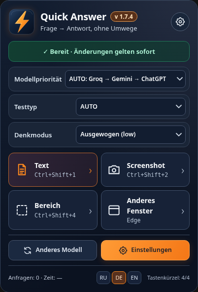

Windows 11 · Microsoft Edge · 1.7.8 Edge · Desktop 0.1 Preview
Quick Answer —
Anleitung
Schnelle Antworten direkt im Browser
Quick Answer analysiert Text und Screenshots in Microsoft Edge. Wähle ein Modell, nutze Tastenkombinationen und erhalte kurze Antworten.

Installation
Lade das ZIP aus Releases herunter und entpacke den vollständigen Ordner. Öffne edge://extensions, aktiviere den Entwicklermodus und wähle „Entpackte Dateien laden“. Wähle edge-quick-answer.
Schnellstart
Ctrl+Shift+1 liest Text, Ctrl+Shift+2 erstellt JPEG, Ctrl+Shift+4 wählt einen Bereich. Ctrl+Shift+3 wechselt das Frageformat. Für andere Fenster gibt es die Freigabe über Edge.
Frageformate
AUTO versucht das Format zu erkennen. Bei normalen Multiple-Choice-Fragen zeigt Quick Answer Nummern und kurze Begründungen, bei Kahoot nur die Farbe. Ergebnisse sollten überprüft werden.
Modelle und Schlüssel
Hinterlege deine Groq- und Gemini-Schlüssel in den Einstellungen. Bei bestimmten Fehlern versucht die Anwendung den nächsten Schlüssel oder Anbieter. ChatGPT erfordert den lokalen Codex Bridge.
Diagnose und Grenzen
Sieh dir Anfragezahl und Antwortzeit an. Bewahre Schlüssel nur im Edge-Profil oder in einem verschlüsselten Backup auf. Fragen werden an den ausgewählten Anbieter gesendet. Geschwindigkeit ist nicht garantiert.
Windows Desktop 0.1 — ungetestete Quellcode-Vorschau
Desktop-Archiv entpacken und START_QuickAnswer.cmd starten. Benötigt Windows 10/11, Windows PowerShell 5.1, WinForms und .NET Framework. Keine kompilierte EXE. Strg+Alt+1: Bildschirm; 2: aktives Fenster; 4: Bereich. Schlüssel: DPAPI CurrentUser. Bilder werden an den gewählten Anbieter gesendet. Laufzeit, Anbieter, DPI und Tastenkürzel sind ungeprüft. Die mitgelieferte Bridge akzeptiert nur Browser-Erweiterungen; Desktop ist derzeit inkompatibel.